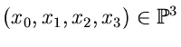
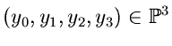

|
Plücker Coordinates for Lines
|


|
4 |
A line l in 3-space spanned by vectors


has Plücker coordinates pi,j:=
xi yj -
xj yi.
These identify the line l with a point
pl in 5-space
 satisfying the quadratic Plücker equation
satisfying the quadratic Plücker equation
 |
= 0.
|
Conversely, every point in 5-space satisfying this
Plücker equation
is the Plücker coordinate of a line in 3-space.